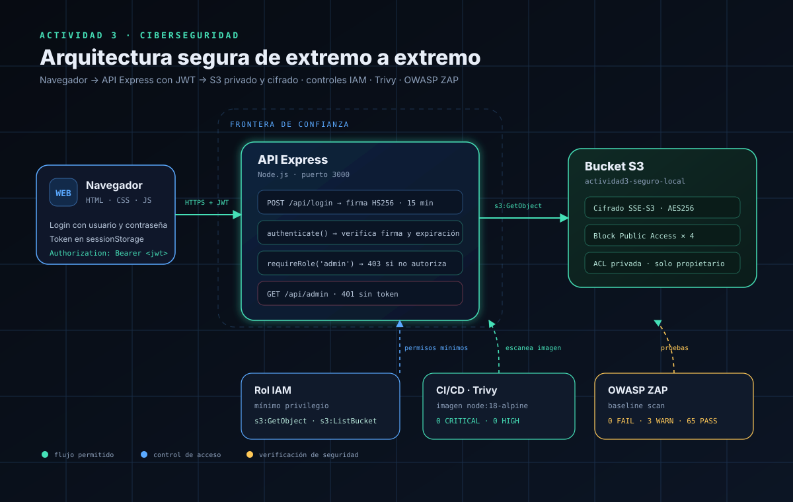
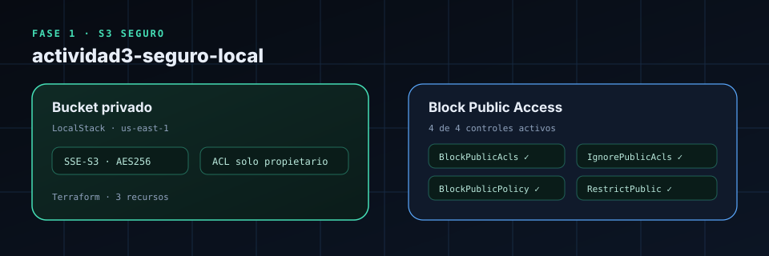
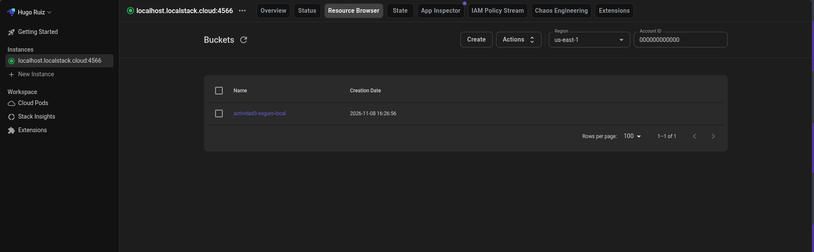
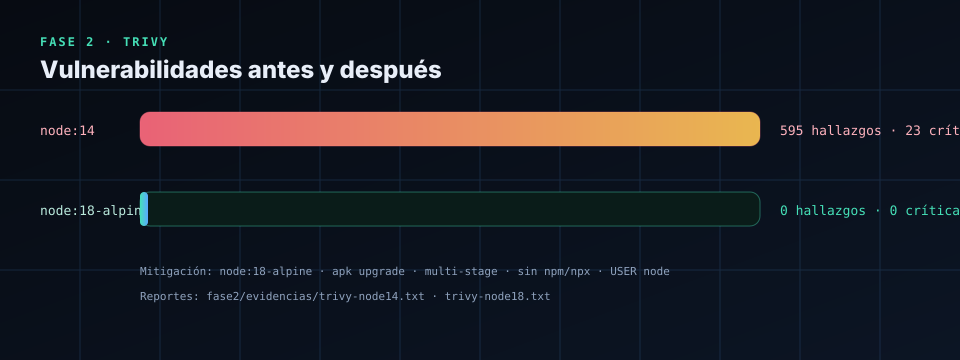
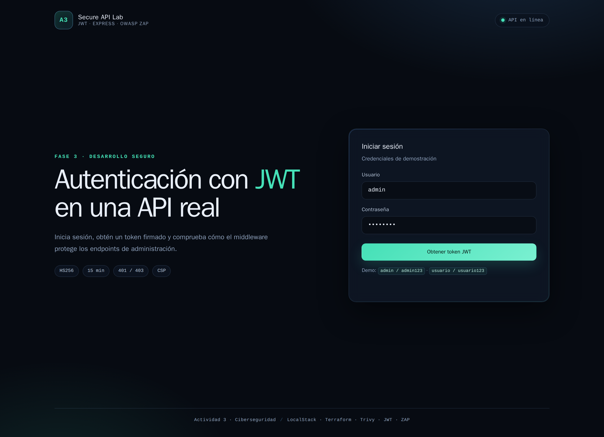
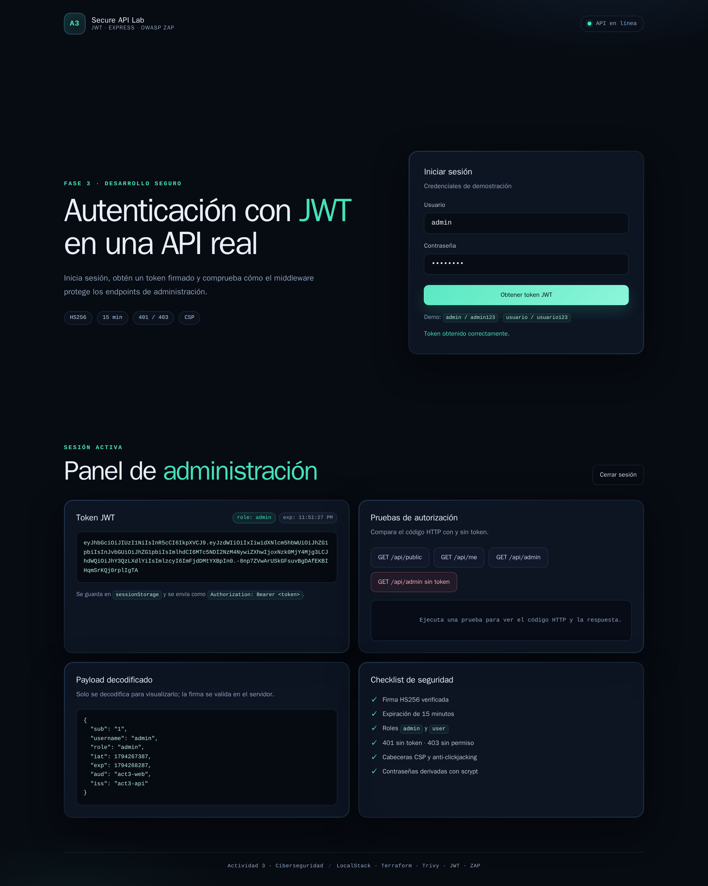
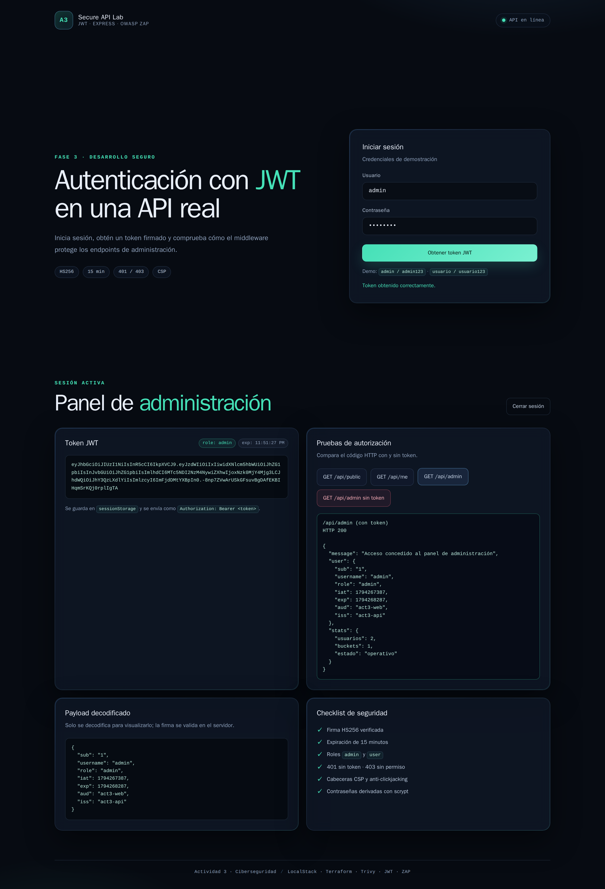

Actividad 3 · Ciberseguridad
Laboratorio de infraestructura como código, análisis de imágenes y autenticación JWT con verificación de seguridad.

node:14 → 0 / 0 en node:18-alpine
| Fase | Tema | Herramientas | Resultado clave |
|---|---|---|---|
| 1 | Infraestructura como código | Terraform · LocalStack · AWS CLI | Bucket privado, AES-256, 4/4 bloqueos |
| 2 | Seguridad de contenedores | Docker · Trivy | 595 hallazgos → 0 |
| 3 | Desarrollo seguro y autenticación | Node.js · Express · JWT · OWASP ZAP | 401 / 403 / 200 · 0 FAIL |

| Herramienta | Versión | Estado |
|---|---|---|
| Docker Engine | 29.9.3 | OK |
| Docker Compose | 5.7.0 | OK |
| Terraform | 1.15.9 | OK |
| AWS CLI | 2.37.9 | OK |
| LocalStack | 2026.10.6 (pro, plan Hobby) | healthy · S3 available |
Salida completa: fase1/evidencias/versiones.txt.
| Recurso | Configuración |
|---|---|
aws_s3_bucket | actividad3-seguro-local |
aws_s3_bucket_server_side_encryption_configuration | SSEAlgorithm = AES256 |
aws_s3_bucket_public_access_block | 4 controles en true |
| Consulta | Resultado |
|---|---|
terraform apply | 3 added, 0 changed, 0 destroyed |
get-bucket-encryption | "SSEAlgorithm": "AES256" |
get-public-access-block | 4/4 en true |
get-bucket-acl | Solo propietario con FULL_CONTROL |
get-bucket-policy-status | NoSuchBucketPolicy |
Segundo terraform plan | No changes |
NoSuchBucketPolicy solo indica que no hay una política de bucket adjunta. No significa que el bucket sea público. La privacidad se sostiene con la ACL privada y los cuatro bloqueos.

HTTP/1.1 200 OK
x-amz-server-side-encryption: AES256LocalStack permitió la lectura anónima. Es una limitación del simulador: no replica todas las reglas de autorización de AWS. La respuesta confirma que el objeto está cifrado con AES-256. En AWS real, con los cuatro bloqueos activos y sin política pública, la lectura anónima se deniega.
| Nivel | Qué se comprobó |
|---|---|
| Infraestructura declarada | Terraform define el bucket, AES256 y los cuatro bloqueos públicos. |
| Configuración consultada | AWS CLI confirma que el cifrado y los cuatro bloqueos están aplicados; la ACL es privada. |
| Seguridad efectivamente aplicada | La prueba anónima devuelve 200 en LocalStack, una limitación del simulador; en AWS real la combinación de bloqueos y ausencia de política pública denegaría la lectura. |

| Imagen | SO | Node/npm | Total | Críticas | Altas |
|---|---|---|---|---|---|
act3-app:node14 | 566 | 29 | 595 | 23 | 572 |
act3-app:node18 | 0 | 0 | 0 | 0 | 0 |
Alcance: los conteos corresponden a las severidades CRITICAL y HIGH (trivy image --severity CRITICAL,HIGH). No incluyen MEDIUM ni LOW.
| Medida | Efecto |
|---|---|
node:14 → node:18-alpine | Base más reciente y menor superficie |
apk upgrade --no-cache | Corrige OpenSSL y zlib del sistema |
| Build multi-stage | Solo pasan a la imagen final las dependencias de producción |
Eliminar npm, npx y corepack | Quita del runtime paquetes vulnerables que la app no necesita |
USER node | La aplicación no corre como root |
FROM node:18-alpine AS deps
WORKDIR /app
COPY package*.json ./
RUN npm ci --omit=dev
FROM node:18-alpine
RUN apk upgrade --no-cache \
&& rm -rf /usr/local/lib/node_modules/npm \
/usr/local/lib/node_modules/corepack \
/usr/local/bin/npm /usr/local/bin/npx /usr/local/bin/corepack
WORKDIR /app
COPY --from=deps /app/node_modules ./node_modules
COPY package.json server.js ./
ENV NODE_ENV=production
USER node
CMD ["node", "server.js"]node:18. A noviembre de 2026 Node 18 ya está fuera de soporte; para un proyecto real se recomienda node:22-alpine o superior.
0 críticas/altas, pero también advirtió que la base Alpine 3.21 ya no recibe actualizaciones de seguridad. El resultado es válido para la base y el estado actual de la base de datos de Trivy, pero no garantiza ausencia de vulnerabilidades futuras. En producción se debe usar una base soportada y reescanear en CI.



| Prueba | Código | Resultado |
|---|---|---|
GET /api/admin sin token | 401 | Correcto |
GET /api/admin con token inválido | 401 | Correcto |
GET /api/admin con token de usuario | 403 | Correcto |
GET /api/admin con token de admin | 200 | Correcto |
function authenticate(req, res, next) {
const authHeader = req.headers.authorization;
if (!authHeader || !authHeader.startsWith('Bearer ')) {
return res.status(401).json({ error: 'Token requerido' });
}
const token = authHeader.slice(7).trim();
try {
req.user = jwt.verify(token, JWT_SECRET, {
algorithms: ['HS256'],
issuer: 'act3-api',
audience: 'act3-web'
});
return next();
} catch (error) {
return res.status(401).json({ error: 'Token inválido o expirado' });
}
}
function requireRole(role) {
return (req, res, next) => {
if (!req.user || req.user.role !== role) {
return res.status(403).json({ error: 'Acceso denegado' });
}
return next();
};
}| Métrica | Valor |
|---|---|
| FAIL | 0 |
| WARN | 3 |
| PASS | 65 |
Las 3 advertencias son de bajo riesgo: contenido no almacenable, formulario de login detectado (esperado) y ausencia de token anti-CSRF. La API usa JSON + Authorization: Bearer, por lo que el riesgo CSRF es bajo. Se documenta como mejora.
{
"Version": "2012-10-17",
"Statement": [
{
"Sid": "LeerObjetosDelBucket",
"Effect": "Allow",
"Action": ["s3:GetObject"],
"Resource": "arn:aws:s3:::actividad3-seguro-local/*"
},
{
"Sid": "ListarSoloEseBucket",
"Effect": "Allow",
"Action": ["s3:ListBucket"],
"Resource": "arn:aws:s3:::actividad3-seguro-local"
}
]
}| Aprendizaje | Aplicación |
|---|---|
| IaC permite repetir y auditar la infraestructura | Terraform declara bucket, cifrado y bloqueos |
| La configuración declarada no siempre es la efectiva | Se verificó con AWS CLI y se documentó la limitación de LocalStack |
| Las imágenes obsoletas acumulan vulnerabilidades | node:14 tenía 595 hallazgos; la imagen corregida, 0 |
| Autenticación no es lo mismo que autorización | 401 sin token, 403 con token sin rol |
| El mínimo privilegio reduce el impacto | IAM solo permite s3:GetObject y s3:ListBucket |
| Las pruebas automatizadas complementan el análisis | ZAP: 0 FAIL; pruebas manuales: 401/403/200 |
| Anexo | Ubicación |
|---|---|
| Scripts Terraform | fase1/ |
| Reportes Trivy | fase2/evidencias/ |
| Código de la API | fase3/server.js |
| Política IAM | fase3/iam-policy.json |
| Diagrama editable | docs/arquitectura.drawio |
| Capturas del sitio | docs/capturas/ |